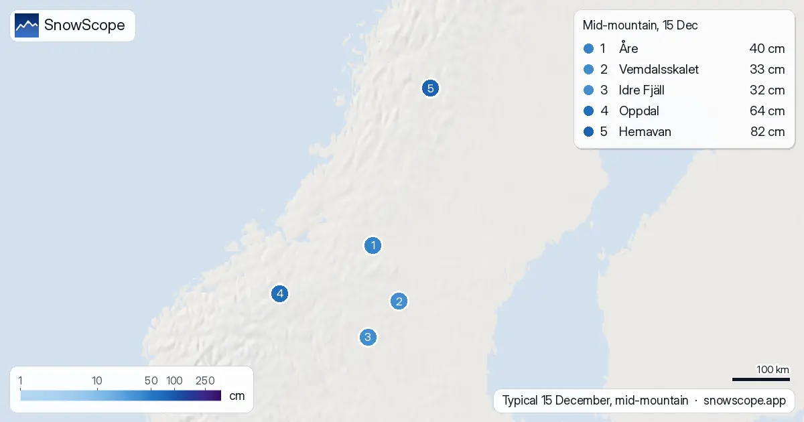

Åre فدجنبر: أشمن سيمانة قبل نوال وكيفاش تبقى رخيصة
Åre هي أشهر محطة فإسكندنافيا، فيها 116 كم ديال البيستات، 48 تيليسييج و928 م ديال فرق العلو. لدجنبر، التاريخ ديالنا ديال 46 شتوة كيعطي جواب واضح: حجز النص التاني ديال الشهر. فسيمانة 15 حتى 21 دجنبر، 89 % ديال الشتوات كان فيهم 30 سم ولا كثر فالوسط (853 م)؛ فالسيمانة الأولى غير 61 %.
شوف توقعات التلج مباشرة ديال Åre فالتطبيق ديال SnowScopeالعلو ديال التلج، التنبيهات والخريطة 3D، فابور.
سيمانة قبل نوال، والفلوس
السكيباس ديال Åre كيتباع بأثمنة متبدلة فالحانوت الرسمي أونلاين ديال الشركة، ونهار 13 نونبر 2026 ما قدرناش نقراو تما ثمن ثابت، إذن ما كنعطيو حتى رقم. اللي نقدرو نقولو: مع الأثمنة على حساب التاريخ، السيمانات الهادية اللي قبل عطلة نوال هما اللي خاصك تقصد، والشرا بكري أونلاين هو أكبر حاجة فيدك.
المصروف الكبير الآخر ف Åre هو البلاصة باش تنعس. حجزها على حساب السيمانة اللي ختاريتي بالأرقام ديال التلج اللي لتحت، ماشي العكس.


أشمن سيمانة فدجنبر
فالوسط النسبة ديال الشتوات اللي فيهم 30 سم ولا كثر كتطلع من 61 % من 1 حتى 7 دجنبر ل 76 % من 8 حتى 14، و 89 % من 15 حتى 21 و 93 % فسيمانة نوال. نهار 15 دجنبر عادي فيه 34 سم لتحت، 40 سم فالوسط و 46 سم فالفوق.
يعني سيمانة 15 حتى 21 دجنبر هي الأحسن: حظوظ قريبة من نوال، قبل الزحام ديال العطلة.
العلو مهم، ولكن قل من اللي كتظن
Åre جبل حدا البحيرة Åresjön، وفدجنبر التلج ديالها متساوي كثر من التحت للفوق على الألب: 34 سم ف 389 م و 46 سم ف 1318 م نهار 15 دجنبر عادي. والفوق فيه الريح، يعني العلو الزايد ماشي ديما تلج زايد.
اللي تبدل هو الفوق. المعدل ديال دجنبر تما نزل من 69 سم فأول 15 شتوة ل 36 سم فآخر 15، والنسبة ديال سيمانات نوال اللي فيهم 30 سم لفوق طاحت من 100 % ل 80 %. الوسط خسر قل فالعلو، ولكن بحالو فالحظوظ.
الحل التاني: Vemdalsskalet
Vemdalsskalet، للجنوب ف Härjedalen، هي البديل الصغير والهادي ديال بزاف ديال العائلات السويدية. التلج ديالها فدجنبر أرق: 33 سم فالوسط نهار 15 دجنبر عادي و 63 % ديال الشتوات فيهم 30 سم فسيمانة 15 حتى 21 دجنبر. الأثمنة تما حتى هي متبدلة وما قريناش ثمن ثابت.
فدجنبر Åre كتعطي حظوظ أحسن وسكي كثر بنفس النوع ديال الأثمنة. Vemdalen كتصلح كثر من يناير.
نصايح للي كيتزلجو
- حجز من 15 حتى 21 دجنبر: 89 % من الشتوات كان فيهم 30 سم فالوسط فهاديك السيمانة، مقابل 61 % فالأولى.
- شري السكيباس أونلاين، بكري وبرا تواريخ العطلة؛ الأثمنة كتبع الطلب.
- نهار الريح تزلج فالبيستات اللي لتحت والمستورين؛ الفوق مكشوف.
- النهار قصير فدجنبر: نظم السكي على حساب الضو، وقرا التوقعات السويدية ديال الانهيارات قبل ما تخرج من البيست.
خرائط أخرى (مواقع خارجية)
المراجع والمصادر
- Åre: official lift-pass page of the operator (prices by date; no fixed price quoted), checked 13 November 2026 www.skistar.com/en/winter/skipass/buy-skipass/lift-pass-are/
- Vemdalsskalet: official lift-pass page of the operator (prices by date; no fixed price quoted), checked 13 November 2026 www.skistar.com/en/winter/skipass/buy-skipass/lift-pass-vemdalen/
على هاد الأرقام
الأرقام ديال التلج: التاريخ ديال التلج ديال SnowScope، 46 شتوة اللي فاتت (1980-81 حتى ل 2025-26) فالعلوات ديال المحطة، مصحح بالعلو (تقدير لمنطقة، ماشي البلاغات ديال المحطة)؛ «تلج مزيان» = 30 سم ولا كثر فالأرض فالمعدل ديال السيمانة. الخريطة: العلو العادي ديال التلج نهار 15 دجنبر موزع على التضاريس حسب العلو. البيستات والتيليسييجات: OpenSkiMap. الأثمنة ديال السكيباس: اللوائح الرسمية ديال المحطات، متشافة نهار 13 نونبر 2026؛ الأثمنة تقدر تتبدل.
النشرات الرسمية ديال الانهيارات: Lavinprognoser (Naturvårdsverket)
كيفاش تستاشهد بهاد المقال
للبحث، التعليم ولا الصحافة: الأرقام والرسومات تقدر تعاود تخدم بيهم بحرية تحت CC BY 4.0 مع هاد الاستشهاد.
SnowScope (2026), Åre فدجنبر: أشمن سيمانة قبل نوال وكيفاش تبقى رخيصة, https://snowscope.app/blog/ar/2026/11/are-december-skiing-sweden-price-snow.html, تشاف ف 2026-11-14
SnowScope (Atlas Labs). (2026, November 14). Åre فدجنبر: أشمن سيمانة قبل نوال وكيفاش تبقى رخيصة. SnowScope snow reports. https://snowscope.app/blog/ar/2026/11/are-december-skiing-sweden-price-snow.html
BibTeX
@misc{snowscope2026aredecemberskiingswedenp,
author = {{SnowScope (Atlas Labs)}},
title = {Åre فدجنبر: أشمن سيمانة قبل نوال وكيفاش تبقى رخيصة},
year = {2026},
month = nov,
howpublished = {\url{https://snowscope.app/blog/ar/2026/11/are-december-skiing-sweden-price-snow.html}},
note = {Published 2026-11-14 12:34 UTC; accessed 2026-11-14}
}· CC BY 4.0 · الطريقة، الداتا والأدوات →
Åre: التلج والحرارة حسب العلو، هاد الشتا مقارنة مع اللي فاتت (الأدوات) →
تابع Åre
فابور: ميساج ملي يجي التلج، والتوقعات كل صباح.